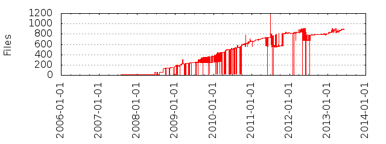

Files
- Total files
- 880
- Total lines
- 119400
- Average file size
- 11945.00 bytes

| Extension | Files (%) | Lines (%) | Lines/file |
|---|
| 210 (23.86%) | 5497 (4.60%) | 26 |
| c | 2 (0.23%) | 172 (0.14%) | 86 |
| cfg | 6 (0.68%) | 694 (0.58%) | 115 |
| cobbler | 12 (1.36%) | 4281 (3.59%) | 356 |
| conf | 5 (0.57%) | 180 (0.15%) | 36 |
| css | 9 (1.02%) | 1548 (1.30%) | 172 |
| csv | 2 (0.23%) | 19 (0.02%) | 9 |
| example | 1 (0.11%) | 25 (0.02%) | 25 |
| expected | 6 (0.68%) | 1847 (1.55%) | 307 |
| gif | 3 (0.34%) | 364 (0.30%) | 121 |
| html | 2 (0.23%) | 105 (0.09%) | 52 |
| ico | 1 (0.11%) | 3 (0.00%) | 3 |
| img | 1 (0.11%) | 0 (0.00%) | 0 |
| in | 6 (0.68%) | 359 (0.30%) | 59 |
| init | 1 (0.11%) | 100 (0.08%) | 100 |
| js | 42 (4.77%) | 14413 (12.07%) | 343 |
| kid | 67 (7.61%) | 4393 (3.68%) | 65 |
| kid-backup | 1 (0.11%) | 63 (0.05%) | 63 |
| ldif | 1 (0.11%) | 100 (0.08%) | 100 |
| mk | 5 (0.57%) | 226 (0.19%) | 45 |
| png | 46 (5.23%) | 5031 (4.21%) | 109 |
| props | 1 (0.11%) | 4 (0.00%) | 4 |
| py | 293 (33.30%) | 67475 (56.51%) | 230 |
| rng | 2 (0.23%) | 1046 (0.88%) | 523 |
| rpm | 7 (0.80%) | 3202 (2.68%) | 457 |
| rst | 53 (6.02%) | 6994 (5.86%) | 131 |
| sh | 23 (2.61%) | 1928 (1.61%) | 83 |
| spec | 1 (0.11%) | 2965 (2.48%) | 2965 |
| sql | 28 (3.18%) | 443 (0.37%) | 15 |
| ttl | 1 (0.11%) | 239 (0.20%) | 239 |
| txt | 33 (3.75%) | 2006 (1.68%) | 60 |
| wsgi | 1 (0.11%) | 42 (0.04%) | 42 |
| xml | 8 (0.91%) | 2220 (1.86%) | 277 |